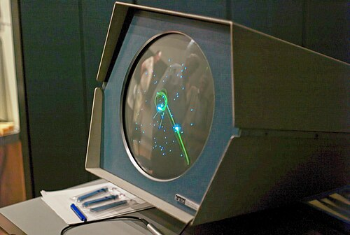
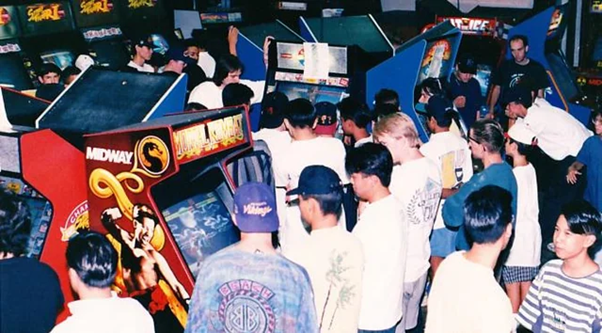

Les jeux vidéo sont aujourd'hui profondément ancrés dans notre culture, mais cela n'a pas toujours été le cas. Il y a à peine trente ans, leur place était bien plus marginale.
Les prémices des jeux vidéo remontent à 1948, sous des formes précaires. La première définition se limitait aux jeux affichés sur un tube cathodique, une technologie développée durant la Seconde Guerre mondiale pour l'effort de guerre.

Exemple de Spacewar, un des premiers jeux vidéos
Avec le temps, la définition s'est élargie pour englober tous les jeux que nous connaissons aujourd'hui : jeux sur téléphone, console (portable ou non) et ordinateur. En somme, tout média interactif qui demande une participation active et une saisie via un clavier ou un périphérique similaire.
Bien que les premiers jeux aient été créés sur ordinateur, le véritable essor du jeu vidéo est souvent associé à l'avènement des jeux d'arcade.

Exemple d'une salle d'arcade de l'époque
Les jeux de combat, les jeux exigeants et les jeux à progression infinie étaient — et restent — les plus répandus dans les salles d'arcade, car leur conception facilitait la génération de revenus continus de la part des joueurs.
In the 1970s, we launched our first major product - an immersive digital platform that allowed users to create and explore virtual environments with unprecedented ease. This product marked our entry into the market and established our reputation for innovation.
The platform featured intuitive design tools, real-time collaboration capabilities, and seamless integration with existing workflows. Early adopters praised its user-friendly interface and powerful capabilities.
Within six months of launch, we had onboarded over 10,000 users and secured partnerships with several educational institutions and creative agencies. This success validated our approach and provided the foundation for future innovations.
The 1980s marked a turning point for Bricardo with the development of our proprietary neural interface technology. After years of intensive research and development, our team achieved what many thought was impossible: a non-invasive brain-computer interface that could interpret user intent with unprecedented accuracy.
This breakthrough allowed us to create digital experiences that felt more natural and intuitive than anything available on the market. Users could navigate complex environments with simple thought patterns, making our technology particularly valuable in accessibility applications.
The innovation earned us several industry awards and recognition from leading tech publications. More importantly, it opened up new possibilities for how humans could interact with digital systems, setting the stage for even more ambitious projects in the years to come.
With our technology gaining international recognition, the 1990s was the decade we expanded our operations globally. We established headquarters in three key regions: North America, Europe, and Asia-Pacific, each tailored to address the unique needs and opportunities of their markets.
This expansion wasn't just about geographical growth—it was about cultural integration. We formed strategic partnerships with local universities, research institutions, and industry leaders to ensure our technology development remained globally informed and locally relevant.
By the end of the 1990s, our team had grown to over 200 employees worldwide, representing 25 different nationalities. This diversity became one of our greatest strengths, bringing varied perspectives that fueled our innovation and helped us create products with truly global appeal.
In the 2000s, Bricardo made our most ambitious move yet: the launch of our quantum computing division. Recognizing the limitations of classical computing for complex simulations, we assembled a world-class team of quantum physicists and computer scientists to explore this frontier.
Our quantum initiatives focused on solving previously intractable problems in digital simulation, from real-time environmental rendering to predictive behavior modeling. Early results showed promise for creating experiences that were orders of magnitude more complex and realistic than anything possible with traditional computing.
While still in its early stages, our quantum computing work has already attracted partnerships with leading research institutions and government agencies. We believe this technology will form the foundation of the next generation of digital experiences, potentially revolutionizing fields from education to healthcare.
Looking ahead to the 2010s and beyond, we're working on technologies that will fundamentally transform how humans interact with digital information. Our research and development teams are exploring fully immersive virtual experiences that seamlessly blend digital and physical realities.
We envision a future where digital environments are indistinguishable from physical ones, where users can interact with complex data through intuitive gestures and thoughts, and where our technology enhances human capabilities rather than replacing them.
While the path forward holds many challenges, we're committed to pushing the boundaries of what's possible and creating technologies that enrich human experience and expand our collective potential.